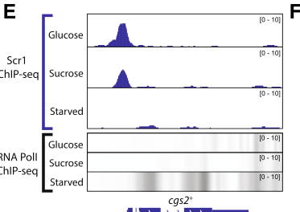

Cgs2 (also called Pde1; SPCC285.09c) is the sole recognised 3',5'-cyclic-nucleotide phosphodiesterase of fission yeast, a 346-residue member of the class II (low-affinity) PDE family with a metallo-beta-lactamase-like fold, orthologous to S. cerevisiae Pde1, C. albicans Pde1 and Dictyostelium PdsA. It hydrolyses cAMP to 5'-AMP (shown by heterologous expression in a PDE-deficient budding yeast strain and by genetic cAMP-reporter assays in S. pombe), and in a PKA-repressible reporter assay it also degrades exogenous cGMP, apparently even more effectively than cAMP. Cgs2 is a cytosolic negative regulator of the glucose-sensing Git3 GPCR / Gpa2 G-alpha / Git2 (Cyr1) adenylate cyclase / PKA (Pka1-Cgs1) pathway: loss of cgs2 raises intracellular cAMP and constitutively activates PKA, and point mutants reveal that Cgs2 activity is rapidly engaged after glucose stimulation to limit the cAMP response (feedback regulation). Through control of PKA, cgs2 mutants fail to enter stationary phase (G0), are partially sterile and meiosis-deficient, and cgs2 expression is itself regulated by the stress-activated MAPK Spc1 via the Atf1-Pcr1 heterodimer acting at an M26 site in the cgs2 promoter, coupling nitrogen-stress signalling to the cAMP/PKA pathway.
| GO Term | Evidence | Action | Reason |
|---|---|---|---|
|
GO:0004114
3',5'-cyclic-nucleotide phosphodiesterase activity
|
IEA
GO_REF:0000120 |
ACCEPT |
Summary: Automated mapping from EC 3.1.4.17 / RHEA:14653 to the general cyclic-nucleotide phosphodiesterase activity term.
Reason: Cgs2 is a class II cyclic-nucleotide phosphodiesterase that hydrolyses cAMP (and cGMP). The term is correct; it is the parent of the more specific cAMP (GO:0004115) and cGMP (GO:0047555) PDE activity terms that are also annotated with experimental evidence. An IEA at this broader level is acceptable.
Supporting Evidence:
PMID:8392846
Extracts from such cells that express the Sz. pombe Pde1 exhibit high levels of cAMP phosphodiesterase activity.
PMID:21118717
suggests that Cgs2 is more effective at hydrolysing cGMP than cAMP
|
|
GO:0004115
3',5'-cyclic-AMP phosphodiesterase activity
|
IBA
GO_REF:0000033 |
ACCEPT |
Summary: PAINT node PTN002001416 (PTHR28283, class II cyclic-nucleotide PDEs) propagates cAMP phosphodiesterase activity across fungal and amoebozoan members; cgs2 is itself one of the experimentally characterised descendants.
Reason: cAMP hydrolysis is the ancestral activity of the class II PDE clade (S. cerevisiae Pde1, C. albicans Pde1, Dictyostelium PdsA) and is directly supported for S. pombe Cgs2 by heterologous expression and by genetic cAMP-reporter assays. cgs2 appearing among the IBA sources reflects its own experimental grounding, not circularity.
Supporting Evidence:
PMID:8392846
Extracts from such cells that express the Sz. pombe Pde1 exhibit high levels of cAMP phosphodiesterase activity.
|
|
GO:0004115
3',5'-cyclic-AMP phosphodiesterase activity
|
IEA
GO_REF:0000002 |
ACCEPT |
Summary: InterPro2GO mapping from the class II cAMP phosphodiesterase domain (IPR000396, Pfam PF02112 PDEase_II).
Reason: The domain-based inference agrees with the experimental evidence that Cgs2 hydrolyses cAMP.
Supporting Evidence:
PMID:8392846
Extracts from such cells that express the Sz. pombe Pde1 exhibit high levels of cAMP phosphodiesterase activity.
|
|
GO:0004115
3',5'-cyclic-AMP phosphodiesterase activity
|
IGI
PMID:8392846 The Schizosaccharomyces pombe pde1/cgs2 gene encodes a cycli... |
ACCEPT |
Summary: Matviw et al. expressed S. pombe Pde1/Cgs2 in an S. cerevisiae strain lacking its genomic cAMP phosphodiesterase genes (PDE1, P22434; PDE2) and detected high cAMP PDE activity in extracts; the cDNA was originally isolated as a suppressor of the S. cerevisiae ira1 deletion.
Reason: Heterologous complementation of a PDE-deficient budding yeast strain plus enzymatic assay of extracts is direct support for cAMP phosphodiesterase activity. This is the core molecular function.
Supporting Evidence:
PMID:8392846
To demonstrate that Pde1 is a cAMP phosphodiesterase we expressed it in an S. cerevisiae strain which lacks the genomic cAMP phosphodiesterase genes.
PMID:8392846
Extracts from such cells that express the Sz. pombe Pde1 exhibit high levels of cAMP phosphodiesterase activity.
|
|
GO:0004115
3',5'-cyclic-AMP phosphodiesterase activity
|
IMP
PMID:21118717 Use of a Schizosaccharomyces pombe PKA-repressible reporter ... |
ACCEPT |
Summary: Using a PKA-repressible fbp1-ura4 reporter, loss of Cgs2 (cgs2-2 frameshift) lowers the concentration of exogenous cAMP needed to activate PKA from millimolar to <100 uM, indicating that Cgs2 degrades cAMP in vivo.
Reason: The mutant shifts the cAMP dose-response in a way that is explained by loss of cAMP hydrolysis. Consistent with the biochemical evidence; core function.
Supporting Evidence:
PMID:21118717
we show that 5FOAR growth can be achieved by <100µM of either cAMP or cGMP
PMID:21118717
The amount of each nucleotide needed to promote growth is a function of the activity of the Cgs2 PDE against each nucleotide
|
|
GO:0005634
nucleus
|
HDA
PMID:16823372 ORFeome cloning and global analysis of protein localization ... |
KEEP AS NON CORE |
Summary: Genome-wide YFP-tagged ORFeome localisation (Matsuyama et al. 2006) recorded Cgs2 in the nucleus as well as the cytosol.
Reason: High-throughput overexpressed-tag localisation; the abstract-only cache does not show the gene-specific image. A nucleocytoplasmic distribution is plausible for a small soluble enzyme (and PKA targets such as Rst2 act in the nucleus), but there is no focused study showing that cAMP hydrolysis by Cgs2 is functionally important in the nucleus. The cytosolic location is the one used in the PomBase GO-CAM. Retain as non-core.
Supporting Evidence:
PMID:16823372
Next, we determined the localization of 4,431 proteins, corresponding to approximately 90% of the fission yeast proteome, by tagging each ORF with the yellow fluorescent protein.
|
|
GO:0005829
cytosol
|
HDA
PMID:16823372 ORFeome cloning and global analysis of protein localization ... |
ACCEPT |
Summary: Genome-wide YFP-tagged localisation places Cgs2 in the cytosol.
Reason: Cgs2 is a soluble protein without transmembrane or targeting signals that degrades cytosolic cAMP produced by adenylate cyclase; the cytosolic location agrees with its function and is the location used for the Cgs2 activity in the PomBase glucose/cAMP GO-CAM (gomodel:66187e4700003150).
Supporting Evidence:
PMID:16823372
Next, we determined the localization of 4,431 proteins, corresponding to approximately 90% of the fission yeast proteome, by tagging each ORF with the yellow fluorescent protein.
|
|
GO:0006198
cAMP catabolic process
|
IEA
GO_REF:0000002 |
ACCEPT |
Summary: InterPro2GO mapping from the class II cAMP phosphodiesterase domain.
Reason: Cgs2 itself catalyses the hydrolysis of cAMP to AMP, i.e. it performs the cAMP catabolic step; loss of cgs2 elevates intracellular cAMP.
Supporting Evidence:
PMID:1657594
biochemical studies demonstrate that cells containing a mutant allele of cgs2+ have elevated levels of cAMP
|
|
GO:0006198
cAMP catabolic process
|
ISM
GO_REF:0000050 |
ACCEPT |
Summary: Curator sequence-model inference of cAMP catabolism from the class II PDE domain.
Reason: As for the IEA; consistent with experimental cAMP PDE activity and elevated cAMP in cgs2 mutants.
Supporting Evidence:
PMID:8392846
deletion of this gene results in elevated levels of intracellular cAMP and inhibition of meiosis
|
|
GO:0008081
phosphoric diester hydrolase activity
|
IEA
GO_REF:0000002 |
ACCEPT |
Summary: InterPro2GO mapping from the class II PDE conserved-site signature (IPR024225) to a very general phosphodiesterase term.
Reason: Correct but uninformative; it is an ancestor of the experimentally supported cAMP and cGMP phosphodiesterase activities. Broad IEA terms are acceptable alongside the specific annotations.
Supporting Evidence:
PMID:8392846
Extracts from such cells that express the Sz. pombe Pde1 exhibit high levels of cAMP phosphodiesterase activity.
|
|
GO:0047555
3',5'-cyclic-GMP phosphodiesterase activity
|
IBA
GO_REF:0000033 |
KEEP AS NON CORE |
Summary: PAINT propagation of cGMP phosphodiesterase activity across the class II PDE clade, grounded in C. albicans Pde1, Dictyostelium enzymes and S. pombe Cgs2 itself.
Reason: Dual cAMP/cGMP hydrolysis is a property of class II PDEs (C. albicans Pde1 hydrolyses both) and Cgs2 degrades exogenous cGMP in vivo. The activity is real, but no endogenous cGMP signalling is established in S. pombe, so the physiologically relevant substrate is cAMP; keep as a non-core activity.
Supporting Evidence:
PMID:21118717
suggests that Cgs2 is more effective at hydrolysing cGMP than cAMP
|
|
GO:0047555
3',5'-cyclic-GMP phosphodiesterase activity
|
IMP
PMID:21118717 Use of a Schizosaccharomyces pombe PKA-repressible reporter ... |
KEEP AS NON CORE |
Summary: In the PKA-repressible reporter system, cGMP activates PKA (via Cgs1) and the amount of exogenous cGMP required is ~2 mM in cgs2+ cells versus <100 uM in cgs2-2 cells, indicating Cgs2 hydrolyses cGMP.
Reason: Good in vivo genetic evidence that Cgs2 degrades cGMP (the authors infer it is even more effective against cGMP than cAMP). Retained, but as non-core because cGMP is supplied exogenously in this assay and the physiological role of Cgs2 is cAMP turnover in glucose/PKA signalling.
Supporting Evidence:
PMID:21118717
we show that 5FOAR growth can be achieved by <100µM of either cAMP or cGMP
PMID:21118717
suggests that Cgs2 is more effective at hydrolysing cGMP than cAMP
|
|
GO:0051447
negative regulation of meiotic cell cycle
|
IMP
PMID:1657594 Interaction between ran1+ protein kinase and cAMP dependent ... |
UNDECIDED |
Summary: cgs2 mutants were isolated as unable to undergo normal meiosis or meiosis induced by ran1/pat1 inactivation, and are sterile and fail to enter stationary phase, owing to elevated cAMP and unregulated PKA.
Reason: The full text of PMID:1657594 (the PomBase source) is not cached, and the cached evidence points the other way. cgs2 mutants were isolated as unable to undergo normal meiosis or meiosis induced by ran1 inactivation (PMID:1657594 abstract), so Cgs2 is required for meiosis. Cgs2 lowers cAMP and so restrains PKA, which itself negatively regulates mating and meiosis (PMID:15448137); that double negative makes Cgs2 permissive for meiosis. No cached evidence supports the negative direction, and the effect is in any case indirect (via cAMP/PKA). Not removed, because the curator read the full text; the direction is raised as a suggested question.
|
|
GO:0106072
negative regulation of adenylate cyclase-activating G protein-coupled receptor signaling pathway
|
IGI
PMID:1340462 Characterization of a fission yeast gene, gpa2, that encodes... |
ACCEPT |
Summary: Combining a GTPase-deficient gpa2 (G-alpha, SPAC23H3.13c) allele with a pde1/cgs2 null raises cAMP to ~20 times wild-type, whereas either alone has a modest effect, showing Cgs2 counterbalances Gpa2-driven adenylate cyclase signalling.
Reason: Cgs2 degrades the second messenger produced by the Gpa2-activated adenylate cyclase, directly damping this GPCR pathway. GO:0110034 (glucose-activated) is the more specific child also annotated; this broader term is correct.
Supporting Evidence:
PMID:1340462
The cAMP level reaches 20 times as high as the wild-type level if a cell carries both this type of gpa2 mutation and a null mutation in pde1 encoding phosphodiesterase.
|
|
GO:0106072
negative regulation of adenylate cyclase-activating G protein-coupled receptor signaling pathway
|
IGI
PMID:21118717 Use of a Schizosaccharomyces pombe PKA-repressible reporter ... |
ACCEPT |
Summary: Mutations that reduce cAMP signalling (including in the git2/cyr1 adenylate cyclase, SPBC19C7.03) are suppressed by cgs2 loss-of-function, and the reporter strains used here carry git2 and cgs2 alleles together.
Reason: Genetic interaction with adenylate cyclase supports Cgs2 acting as the cAMP-degrading brake on the pathway.
Supporting Evidence:
PMID:21118717
mutations that reduce but do not eliminate cAMP signaling can be suppressed by mutations in the cgs2 PDE gene
|
|
GO:0106072
negative regulation of adenylate cyclase-activating G protein-coupled receptor signaling pathway
|
IMP
PMID:1318497 Reduction in the intracellular cAMP level triggers initiatio... |
ACCEPT |
Summary: pde1 was isolated as a multicopy suppressor of the sterility caused by high cAMP, and its disruption causes partial sterility and meiotic deficiency, indicating it balances cAMP levels in vivo.
Reason: Supports Cgs2 as a negative regulator of cAMP signalling. Abstract-only cache; defer to the PomBase curator for the specific pathway assignment.
Supporting Evidence:
PMID:1318497
Disruption of pde1 made S. pombe cells partially sterile and meiosis-deficient, indicating that this cAMP phosphodiesterase plays an important role in balancing the cAMP level in vivo.
|
|
GO:0106072
negative regulation of adenylate cyclase-activating G protein-coupled receptor signaling pathway
|
IMP
PMID:15448137 Atf1-Pcr1-M26 complex links stress-activated MAPK and cAMP-d... |
ACCEPT |
Summary: Davidson et al. describe Cgs2 as a negative regulator of the PKA pathway whose expression is controlled by Spc1-Atf1-Pcr1 at an M26 promoter site; cgs2 null mutants are sterile and fail to arrest in G0.
Reason: Consistent with Cgs2 acting as the cAMP-degrading negative regulator of the cAMP/PKA pathway. The paper's main subject is regulation of cgs2 expression, but the curator had full-text mutant data.
Supporting Evidence:
PMID:15448137
Cgs2 cleaves an essential cofactor (cyclic AMP) to negatively regulate PKA, which is itself a negative regulator of mating and meiosis.
|
|
GO:0106072
negative regulation of adenylate cyclase-activating G protein-coupled receptor signaling pathway
|
IMP
PMID:15831585 Direct activation of fission yeast adenylate cyclase by the ... |
ACCEPT |
Summary: Ivey and Hoffman used the cgs2-s1 PDE mutant background to unmask modest defects in Gpa2-dependent adenylate cyclase activation, because PDE activation partially masks cAMP-synthesis defects through feedback.
Reason: Supports the role of Cgs2 PDE activity in limiting the glucose-triggered, Gpa2/adenylate-cyclase cAMP signal.
Supporting Evidence:
PMID:15831585
Because the intracellular cAMP level is partially controlled through feedback regulation due to activation of cAMP PDE
|
|
GO:0110034
negative regulation of adenylate cyclase-activating glucose-activated G protein-coupled receptor signaling pathway
|
IBA
GO_REF:0000033 |
ACCEPT |
Summary: PAINT propagation of the glucose-activated GPCR/cAMP pathway regulatory role, seeded by cgs2 itself.
Reason: The orthologous low-affinity PDEs of S. cerevisiae and C. albicans specifically control glucose-induced cAMP signalling, and S. pombe Cgs2 limits the Git3/Gpa2-dependent cAMP response to glucose. Placement at the class II PDE node is sound.
Supporting Evidence:
PMID:9880329
These results indicate a specific role for Pde1 in controlling glucose and intracellular acidification-induced cAMP signaling.
PMID:16143612
These data are consistent with a model in which the wild-type Cgs2 cAMP phosphodiesterase becomes activated almost immediately after adenylate cyclase activation to limit the cAMP response to glucose in fission yeast.
|
|
GO:0110034
negative regulation of adenylate cyclase-activating glucose-activated G protein-coupled receptor signaling pathway
|
IMP
PMID:1657594 Interaction between ran1+ protein kinase and cAMP dependent ... |
ACCEPT |
Summary: cgs2 mutants have elevated cAMP and unregulated cAMP-dependent protein kinase activity.
Reason: Elevated cAMP in cgs2 mutants supports a negative role in the (glucose-activated) cAMP pathway; this is the core biological role. Abstract-only cache; defer to curator for glucose-specific context.
Supporting Evidence:
PMID:1657594
biochemical studies demonstrate that cells containing a mutant allele of cgs2+ have elevated levels of cAMP
|
|
GO:0110034
negative regulation of adenylate cyclase-activating glucose-activated G protein-coupled receptor signaling pathway
|
IMP
PMID:24928510 Glucose activates TORC2-Gad8 protein via positive regulation... |
ACCEPT |
Summary: Cohen et al. show that glucose activates TORC2-Gad8 via the cAMP/PKA pathway; the cgs2 mutant data are in the full text (not cached; abstract only).
Reason: The abstract establishes the glucose/cAMP/PKA context but does not mention cgs2; the PomBase curator had the full text and the annotation is consistent with the well-established role of Cgs2. Accept, deferring to the curator. This reference also supports the biological-process edge for Cgs2 in the PomBase GO-CAM.
Supporting Evidence:
PMID:24928510
The glucose signal that activates TORC2-Gad8 is mediated via the cAMP/PKA pathway, a major glucose-sensing pathway.
|
|
GO:0141162
negative regulation of cAMP/PKA signal transduction
|
IBA
GO_REF:0000033 |
ACCEPT |
Summary: PAINT propagation of negative regulation of cAMP/PKA signalling across class II PDEs.
Reason: By hydrolysing cAMP, Cgs2 keeps the Cgs1 regulatory subunit bound to Pka1 and limits PKA activity; loss of cgs2 phenocopies loss of cgs1 (unregulated PKA). Core process.
Supporting Evidence:
PMID:15448137
Cgs2 cleaves an essential cofactor (cyclic AMP) to negatively regulate PKA, which is itself a negative regulator of mating and meiosis.
PMID:7862141
The cgs1+ gene encodes the regulatory subunit of cAPK, and the cgs2+ gene encodes a cyclic AMP phosphodiesterase. Thus, both genes encode proteins which negatively regulate the activity of cAPK.
|
Q: What activates Cgs2 within a minute of glucose stimulation? Is the conserved PKA consensus site (equivalent to S. cerevisiae Pde1 Ser252) phosphorylated by Pka1 in vivo, and does the conserved N-terminal region altered in Cgs2-s1 (S24F) mediate this activation?
Suggested experts: Hoffman CS
Q: Is there a direct regulatory interaction between Gpa2 and Cgs2, as suggested by the failure of cgs2-s1 (but not cgs2-2) to suppress gpa2 deletion?
Suggested experts: Hoffman CS
Q: Does Cgs2 hydrolyse any endogenous cGMP in S. pombe, or is its cGMP activity physiologically irrelevant?
Q: Should the GO:0051447 negative regulation of meiotic cell cycle annotation (PMID:1657594) be reconsidered, since cgs2 loss blocks meiosis, i.e. Cgs2 is permissive for meiosis by lowering cAMP/PKA?
Experiment: Purify recombinant Cgs2 and measure Km/kcat for cAMP and cGMP, metal dependence and inhibitor sensitivity, in parallel with the Cgs2-s1 (S24F) variant.
Hypothesis: Cgs2 is a low-affinity dual-specificity PDE; S24F affects regulation rather than intrinsic catalysis.
Type: Enzyme kinetics
Experiment: Test glucose-induced, Pka1-dependent phosphorylation of Cgs2 and the effect of phospho-site alanine mutants on the glucose-triggered cAMP time course.
Hypothesis: PKA phosphorylation of Cgs2 mediates the rapid feedback that limits glucose-induced cAMP.
Type: Phosphoproteomics / mutagenesis
Experiment: Endogenously tag Cgs2 and image before and after glucose addition and under nitrogen starvation.
Hypothesis: Cgs2 is predominantly cytosolic; any regulated nuclear pool would indicate a nuclear role in limiting PKA signalling.
Type: Localisation
The research report should be a detailed narrative explaining the function, biological processes, and localization of the gene product. Citations should be given for all claims.
You should prioritize authoritative reviews and primary scientific literature when conducting research. You can supplement
this with annotations you find in gene/protein databases, but these can be outdated or inaccurate.
We are specifically interested in the primary function of the gene - for enzymes, what reaction is catalyzed, and what is the substrate specificity? For transporters, what is the substrate? For structural proteins or adapters, what is the broader structural role? For signaling molecules, what is the role in the pathway.
We are interested in where in or outside the cell the gene product carries out its function.
We are also interested in the signaling or biochemical pathways in which the gene functions. We are less interested in broad pleiotropic effects, except where these elucidate the precise role.
Include evidence where possible. We are interested in both experimental evidence as well as inference from structure, evolution, or bioinformatic analysis. Precise studies should be prioritized over high-throughput, where available.
The target is the fission-yeast cgs2 gene, also called pde1, rather than the similarly named PKA regulatory-subunit gene cgs1 or a pde1 gene from another organism. A primary S. pombe transcriptomics study explicitly identifies cgs2 as locus SPCC285.09c and its product as a cAMP-specific phosphodiesterase. The accession P36599 and strain designation 972/ATCC 24843 are supplied by the target UniProt record; the retrieved experiments corroborate the organism, gene name, alias, locus and function, but did not independently establish the accession-to-strain mapping. (li1995thecyclicamp pages 23-28, xuefranzen2006genomewideidentificationof pages 4-6)
The established reaction is 3′,5′-cAMP + H₂O → 5′-AMP. Cgs2 removes an intracellular second messenger rather than producing one: in its absence, cAMP accumulates and PKA signaling increases. In an early functional experiment summarized by Li, expression of S. pombe Pde1 in budding-yeast cells lacking their own phosphodiesterases restored high cAMP-phosphodiesterase activity. In fission yeast, deletion increased intracellular cAMP, whereas overexpression decreased it. These complementary biochemical and genetic observations provide substantially stronger support for cAMP hydrolysis than sequence annotation alone. The original cloning paper is Matviw, Li and Young, published 1993, https://doi.org/10.1006/bbrc.1993.1787; the accessible experimental account is Li, 1995, https://doi.org/10.11575/prism/18829. (li1995thecyclicamp pages 23-28)
The UniProt information supplied for this task assigns Cgs2 to cyclic-nucleotide phosphodiesterase class II and lists PDEase_II/PF02112, Pdiesterase2/IPR000396, cAMP-PdiesteraseII_CS/IPR024225 and IPR036866. This is consistent with the reported sequence similarity—approximately 24% identity—to the low-affinity budding-yeast cAMP phosphodiesterase, but the domain identifiers themselves were not experimentally validated in the retrieved S. pombe studies. Crucially, the relevant comparison is to a class-II-type fungal enzyme, not to human PDE1 or the other mammalian class-I PDE families. (li1995thecyclicamp pages 23-28, hoffman2022useofa pages 1-2)
cAMP is an experimentally supported substrate. The retrieved Cgs2-specific literature did not establish a cGMP-hydrolysis rate, cAMP:cGMP preference, or purified-enzyme kinetic constants. Consequently, “cAMP-specific” is an appropriate description of its demonstrated physiological role, but neither absolute inability to hydrolyze cGMP nor dual specificity should be claimed from these data. Hydrolysis of cGMP by a different PDE expressed experimentally in fission yeast is not evidence that endogenous Cgs2 does so. (li1995thecyclicamp pages 23-28, xuefranzen2006genomewideidentificationof pages 4-6)
In glucose-replete cells, the glucose-sensing receptor Git3 signals through the Gpa2–Git5–Git11 heterotrimeric G protein to stimulate Cyr1 adenylyl cyclase, which synthesizes cAMP from ATP. cAMP binds the Cgs1 regulatory subunit of PKA, releasing/activating the Pka1 catalytic subunit. Cgs2 opposes this sequence by hydrolyzing cAMP, thereby limiting the amplitude or duration of PKA signaling. Pka1 inhibits Rst2; when cAMP–PKA signaling falls during nutrient limitation, Rst2 can promote ste11 expression and the initiation of sexual differentiation. This places Cgs2 at the biochemical junction between glucose sensing and the starvation-responsive transcriptional program, rather than making it a receptor or a direct DNA-binding regulator. Kawamukai’s authoritative review was published 2024, https://doi.org/10.1093/bbb/zbae019. (kawamukai2024regulationofsexual pages 4-5, kawamukai2024regulationofsexual pages 4-4, vassiliadis2019agenomewideanalysis media 75d0e7b4)
Genetics agrees with this placement. Loss of pde1/cgs2 elevates cAMP and impairs mating and meiosis; it also compromises stationary-phase survival and glucose-starvation induction of the gluconeogenesis reporter fbp1. Overexpression lowers cAMP and alleviates inhibition of sexual development. Those developmental and reporter phenotypes are downstream readouts of excessive cAMP–PKA activity, not evidence that Cgs2 itself catalyzes a step in meiosis or gluconeogenesis. Hoffman’s expert synthesis, published 2022, is at https://doi.org/10.3389/fphar.2021.833156. (li1995thecyclicamp pages 23-28, hoffman2022useofa pages 2-3)
Cgs2 is also subject to transcriptional and possible activity-level regulation. In a 2019 primary study, Scr1 chromatin immunoprecipitation identified binding at the cgs2 promoter, while RNA-seq found significantly greater cgs2 expression in scr1Δ cells under glucose-sufficient conditions. Thus, glucose-dependent Scr1 repression acts directly at the gene’s regulatory region; increased Cgs2 expression during nutrient limitation is a plausible contributor to reduced cAMP and PKA activity. The study’s promoter data and pathway model are illustrated in its Figure 3. Vassiliadis et al., 2019, https://doi.org/10.1186/s12864-019-5602-8. (vassiliadis2019agenomewideanalysis pages 3-7, vassiliadis2019agenomewideanalysis media 75d0e7b4)
A distinct 2006 pheromone-response experiment identified cgs2/SPCC285.09c among induced transcripts: 3.4-fold after M-factor and 2.1-fold after P-factor stimulation in the assayed backgrounds. This supports an additional transcriptional connection between the mating response and cAMP degradation; these are mRNA fold changes, not measurements of Cgs2 protein abundance or enzyme activity. Xue-Franzén et al., 2006, https://doi.org/10.1186/1471-2164-7-303. (xuefranzen2006genomewideidentificationof pages 3-4, xuefranzen2006genomewideidentificationof pages 4-6)
For post-stimulus feedback, a cgs2-2 mutant has elevated basal cAMP yet retains an approximately wild-type glucose-induced fold response. Conversely, cgs2-s1 has approximately normal basal cAMP but an enhanced glucose-triggered response. Together these allele-specific observations suggest that Cgs2 both helps set basal cAMP and restrains the induced cAMP pulse. Whether its proposed activation is mediated by direct PKA phosphorylation, cAMP-dependent allostery, or another mechanism has not been resolved by the available evidence; a mechanism established for a different organism’s Pde1 must not be transferred to Cgs2. Hoffman, 2005, https://doi.org/10.1042/BST0330257; the pertinent primary genetics study is Wang et al., 2005, https://doi.org/10.1534/genetics.105.047233, which was not accessible in full in this search. (hoffman2005glucosesensingvia pages 2-3, hoffman2005glucosesensingvia pages 3-4)
Cgs2 acts on an intracellular cAMP pool, as inferred from intracellular cAMP measurements and PKA-dependent phenotypes. Nevertheless, the retrieved studies did not directly establish where the Cgs2 protein resides within the cell. A precise assignment to cytosol, nucleus, plasma membrane, mitochondria or another compartment would therefore be unjustified. In particular, microscopy showing redistribution of Rst2, Pka1 or a PKA reporter does not localize Cgs2. No evidence reviewed here supports an extracellular catalytic role. (li1995thecyclicamp pages 23-28, sakai2024livecellfluorescenceimaging pages 9-11)
A 2024 live-cell study provides a useful modern functional test. Its Rst2-derived PKA translocation reporter was cytoplasmic in cgs2Δ cells grown with 2% glucose, with a response comparable to or greater than wild type; by contrast, cyr1Δ and pka1Δ showed nuclear reporter accumulation. The study also observed a higher signal from an Epac-based cAMP sensor in cgs2Δ, although that sensor did not respond convincingly to loss of Cyr1 and was judged insufficiently sensitive for physiological cAMP measurements. Thus, the PKA reporter strengthens the conclusion that Cgs2 restrains signaling in living cells, without establishing its localization or a direct enzymatic rate. The work appeared as a February 2024 preprint, https://doi.org/10.1101/2024.01.14.575615; the subsequently published article is https://doi.org/10.1002/yea.3937. (sakai2024livecellfluorescenceimaging pages 7-9, sakai2024livecellfluorescenceimaging pages 9-11)
The broader physiological relevance of the pathway continues to develop: a separate 2024 study found that lowering glucose-linked Pka1 activity changes the requirement for septation-initiation-network signaling during cytokinesis. That study establishes a downstream PKA-pathway connection, not a direct catalytic or physical role for Cgs2 in the septation machinery. Özdemir et al., 2024, https://doi.org/10.1242/jcs.261488. (ozdemir2024arolefor pages 1-2, ozdemir2024arolefor pages 2-4)
Cgs2’s status as the endogenous fission-yeast PDE has practical value in cell-based PDE screening. Researchers replaced its locus with mammalian PDE genes and used cAMP/PKA-dependent fbp1 reporters to identify cellular PDE activity or inhibitors; native Cgs2 served as a comparator. In one assay, wild-type-Cgs2 reporter activity was 1,661 ± 121 units with vehicle and 1,807 ± 446 and 1,784 ± 429 with 50 and 100 μM rolipram, respectively, whereas an inactive frameshifted Cgs2-2 control gave 23 ± 10 vehicle units. This indicates no detectable rolipram inhibition of Cgs2 in that cellular assay, not an in-vitro IC₅₀ or proof of universal inhibitor resistance. Ivey et al., 2008, https://doi.org/10.1177/1087057107312127. (ivey2008developmentofa pages 2-4, ivey2008developmentofa pages 4-5)
The central functional annotation is consequently intracellular cAMP turnover and attenuation of glucose–cAMP–PKA signaling. The strongest direct evidence concerns cAMP hydrolysis and its genetic/signaling consequences; Cgs2-specific cGMP kinetics, a definitive subcellular location, and the molecular mechanism of acute enzyme activation remain unresolved in the sources reviewed. Those uncertainties are important distinctions when interpreting family annotations, pathway diagrams and experiments performed on other proteins. (li1995thecyclicamp pages 23-28, hoffman2005glucosesensingvia pages 3-4, sakai2024livecellfluorescenceimaging pages 9-11)
The following evidence matrix distinguishes direct observations from inference.
| Question | Evidence | Interpretation / limitations | References |
|---|---|---|---|
| Correct identity? | In S. pombe, cgs2 is systematic locus SPCC285.09c and encodes a cAMP-specific phosphodiesterase. Its transcript was induced 3.4-fold by M-factor and 2.1-fold by P-factor. | Confirms the target is fission-yeast Cgs2/Pde1, not the PKA regulatory subunit Cgs1 or a PDE1 from another organism. P36599 was not independently established by this experiment. | Xue-Franzén et al. (2006), BMC Genomics 7:303, https://doi.org/10.1186/1471-2164-7-303 (xuefranzen2006genomewideidentificationof pages 4-6) |
| Primary reaction and cAMP evidence? | Cgs2/Pde1 catalyzes cAMP + H₂O → 5′-AMP. Expression in budding-yeast cells lacking endogenous PDE genes restored high cAMP-PDE activity; deletion in S. pombe elevated intracellular cAMP and impaired mating/meiosis, whereas overexpression reduced cAMP. | Complementation, intracellular cAMP measurements, and reciprocal loss-/gain-of-function phenotypes strongly establish cAMP hydrolysis. The retrieved account does not provide purified-enzyme kinetic constants. | Matviw, Li & Young (1993), Biochem. Biophys. Res. Commun. 194:79–82, https://doi.org/10.1006/bbrc.1993.1787; summarized in Li (1995), https://doi.org/10.11575/prism/18829 (li1995thecyclicamp pages 23-28) |
| Is cGMP a demonstrated substrate? | No retrieved study directly measured Cgs2-catalyzed cGMP hydrolysis or reported cAMP-versus-cGMP kinetic constants. | cGMP specificity remains unverified. Class-II PDE domain annotation or activity of other PDEs cannot substitute for a substrate assay of S. pombe Cgs2. | Evidence review of the original functional literature (li1995thecyclicamp pages 23-28) |
| Where does Cgs2 act? | Loss of Cgs2 elevates intracellular cAMP and activates the intracellular PKA pathway; no direct Cgs2-GFP, fractionation, secretion, or organelle-localization experiment was found. | Function is inferred to occur inside the cell, but cytosolic, nuclear, membrane-associated, or organellar localization cannot presently be assigned. Localization of Cgs1, Pka1, or Rst2 is not evidence for Cgs2 localization. | Li (1995), https://doi.org/10.11575/prism/18829 (li1995thecyclicamp pages 23-28); Sakai, Aoki & Goto (2024), https://doi.org/10.1002/yea.3937 (sakai2024livecellfluorescenceimaging pages 9-11) |
| Role in glucose-feedback control? | cgs2-2 cells have elevated basal cAMP but retain a glucose-induced fold increase similar to wild type. cgs2-s1 cells have approximately wild-type basal cAMP but an enhanced glucose response, consistent with failure to activate PDE appropriately after stimulation. | Cgs2 helps set basal cAMP and restrain/terminate the glucose-induced signal. Feedback may involve PKA or cAMP-dependent allostery, but direct PKA phosphorylation of Cgs2 has not been demonstrated. | Hoffman (2005), Biochem. Soc. Trans. 33:257–260, https://doi.org/10.1042/BST0330257 (hoffman2005glucosesensingvia pages 3-4) |
| Is cgs2 transcription glucose regulated? | Scr1 ChIP-seq detected Scr1 at the cgs2 promoter, and RNA-seq showed significant cgs2 upregulation in scr1Δ cells under glucose-sufficient conditions. | Supports direct carbon-catabolite repression of cgs2 by Scr1. Increased Cgs2 provides a plausible route from nutrient limitation to lower cAMP, reduced PKA activity, and Rst2/Ste11 activation; downstream causality is partly inferred. | Vassiliadis et al. (2019), BMC Genomics 20:251, https://doi.org/10.1186/s12864-019-5602-8 (vassiliadis2019agenomewideanalysis pages 3-7) |
| What did 2024 live-cell work add? | In 2% glucose, an Rst2-derived PKA translocation reporter was cytoplasmic in cgs2Δ cells, with activity comparable to or above wild type. Deleting cgs2 also increased the CFP/FRET signal of an Epac cAMP sensor, although that sensor failed an important low-cAMP validation in cyr1Δ cells. | Provides single-cell evidence that Cgs2 restrains PKA activity. The PKA reporter is stronger evidence than the insufficiently sensitive Epac sensor; neither experiment localizes Cgs2 itself. | Sakai, Aoki & Goto (2024), Yeast 41:349–363, https://doi.org/10.1002/yea.3937; preprint https://doi.org/10.1101/2024.01.14.575615 (sakai2024livecellfluorescenceimaging pages 9-11) |
| Practical application in PDE screening? | Endogenous Cgs2 served as the reference PDE in a fission-yeast cell-based screen. Reporter activity was 1,661 ± 121 with vehicle, 1,807 ± 446 with 50 µM rolipram, and 1,784 ± 429 with 100 µM rolipram, indicating no detectable inhibition; inactive frameshifted Cgs2-2 gave 23 ± 10. | Cgs2 is a useful endogenous activity/counter-screen comparator. Rolipram insensitivity at 50–100 µM is a cellular assay result, not a purified-enzyme IC₅₀ or proof of absolute resistance. | Ivey et al. (2008), J. Biomol. Screen. 13:62–71, https://doi.org/10.1177/1087057107312127 (ivey2008developmentofa pages 4-5) |
Table: Compact evidence assessment for the correctly identified S. pombe Cgs2/Pde1 protein, separating established cAMP-PDE function from unresolved cGMP specificity and localization. It also summarizes regulatory, live-cell, and screening evidence without extrapolating from unrelated PDE1 proteins.
References
(li1995thecyclicamp pages 23-28): Jiahua Li. The cyclic amp signal transduction pathway in fission yeast schizosaccharomyces pombe. Jan 1995. URL: https://doi.org/10.11575/prism/18829, doi:10.11575/prism/18829. This article has 0 citations.
(xuefranzen2006genomewideidentificationof pages 4-6): Yongtao Xue-Franzén, Søren Kjærulff, Christian Holmberg, Anthony Wright, and Olaf Nielsen. Genomewide identification of pheromone-targeted transcription in fission yeast. BMC Genomics, 7:303-303, Nov 2006. URL: https://doi.org/10.1186/1471-2164-7-303, doi:10.1186/1471-2164-7-303. This article has 80 citations and is from a peer-reviewed journal.
(hoffman2022useofa pages 1-2): Charles S. Hoffman. Use of a fission yeast platform to identify and characterize small molecule pde inhibitors. Frontiers in Pharmacology, Jan 2022. URL: https://doi.org/10.3389/fphar.2021.833156, doi:10.3389/fphar.2021.833156. This article has 4 citations.
(kawamukai2024regulationofsexual pages 4-5): Makoto Kawamukai. Regulation of sexual differentiation initiation in schizosaccharomyces pombe. Bioscience, biotechnology, and biochemistry, 88:475-492, Mar 2024. URL: https://doi.org/10.1093/bbb/zbae019, doi:10.1093/bbb/zbae019. This article has 17 citations.
(kawamukai2024regulationofsexual pages 4-4): Makoto Kawamukai. Regulation of sexual differentiation initiation in schizosaccharomyces pombe. Bioscience, biotechnology, and biochemistry, 88:475-492, Mar 2024. URL: https://doi.org/10.1093/bbb/zbae019, doi:10.1093/bbb/zbae019. This article has 17 citations.
(vassiliadis2019agenomewideanalysis media 75d0e7b4): Dane Vassiliadis, Koon Ho Wong, Alex Andrianopoulos, and Brendon J. Monahan. A genome-wide analysis of carbon catabolite repression in schizosaccharomyces pombe. BMC Genomics, Mar 2019. URL: https://doi.org/10.1186/s12864-019-5602-8, doi:10.1186/s12864-019-5602-8. This article has 33 citations and is from a peer-reviewed journal.
(hoffman2022useofa pages 2-3): Charles S. Hoffman. Use of a fission yeast platform to identify and characterize small molecule pde inhibitors. Frontiers in Pharmacology, Jan 2022. URL: https://doi.org/10.3389/fphar.2021.833156, doi:10.3389/fphar.2021.833156. This article has 4 citations.
(vassiliadis2019agenomewideanalysis pages 3-7): Dane Vassiliadis, Koon Ho Wong, Alex Andrianopoulos, and Brendon J. Monahan. A genome-wide analysis of carbon catabolite repression in schizosaccharomyces pombe. BMC Genomics, Mar 2019. URL: https://doi.org/10.1186/s12864-019-5602-8, doi:10.1186/s12864-019-5602-8. This article has 33 citations and is from a peer-reviewed journal.
(xuefranzen2006genomewideidentificationof pages 3-4): Yongtao Xue-Franzén, Søren Kjærulff, Christian Holmberg, Anthony Wright, and Olaf Nielsen. Genomewide identification of pheromone-targeted transcription in fission yeast. BMC Genomics, 7:303-303, Nov 2006. URL: https://doi.org/10.1186/1471-2164-7-303, doi:10.1186/1471-2164-7-303. This article has 80 citations and is from a peer-reviewed journal.
(hoffman2005glucosesensingvia pages 2-3): Charles S. Hoffman. Glucose sensing via the protein kinase a pathway in schizosaccharomyces pombe. Biochemical Society transactions, 33 Pt 1:257-60, Feb 2005. URL: https://doi.org/10.1042/bst0330257, doi:10.1042/bst0330257. This article has 155 citations and is from a peer-reviewed journal.
(hoffman2005glucosesensingvia pages 3-4): Charles S. Hoffman. Glucose sensing via the protein kinase a pathway in schizosaccharomyces pombe. Biochemical Society transactions, 33 Pt 1:257-60, Feb 2005. URL: https://doi.org/10.1042/bst0330257, doi:10.1042/bst0330257. This article has 155 citations and is from a peer-reviewed journal.
(sakai2024livecellfluorescenceimaging pages 9-11): Keiichiro Sakai, Kazuhiro Aoki, and Yuhei Goto. Live-cell fluorescence imaging and optogenetic control of pka kinase activity in fission yeastschizosaccharomyces pombe. BioRxiv, Jan 2024. URL: https://doi.org/10.1101/2024.01.14.575615, doi:10.1101/2024.01.14.575615. This article has 0 citations.
(sakai2024livecellfluorescenceimaging pages 7-9): Keiichiro Sakai, Kazuhiro Aoki, and Yuhei Goto. Live-cell fluorescence imaging and optogenetic control of pka kinase activity in fission yeastschizosaccharomyces pombe. BioRxiv, Jan 2024. URL: https://doi.org/10.1101/2024.01.14.575615, doi:10.1101/2024.01.14.575615. This article has 0 citations.
(ozdemir2024arolefor pages 1-2): Özge Uysal Özdemir, Andrea Krapp, Bastien Mangeat, Marc Spaltenstein, and Viesturs Simanis. A role for the carbon source of the cell and protein kinase a in regulating the s. pombe septation initiation network. Journal of Cell Science, Jan 2024. URL: https://doi.org/10.1242/jcs.261488, doi:10.1242/jcs.261488. This article has 3 citations and is from a domain leading peer-reviewed journal.
(ozdemir2024arolefor pages 2-4): Özge Uysal Özdemir, Andrea Krapp, Bastien Mangeat, Marc Spaltenstein, and Viesturs Simanis. A role for the carbon source of the cell and protein kinase a in regulating the s. pombe septation initiation network. Journal of Cell Science, Jan 2024. URL: https://doi.org/10.1242/jcs.261488, doi:10.1242/jcs.261488. This article has 3 citations and is from a domain leading peer-reviewed journal.
(ivey2008developmentofa pages 2-4): F. Douglas Ivey, Lili Wang, Didem Demirbas, Christina Allain, and Charles S. Hoffman. Development of a fission yeast-based high-throughput screen to identify chemical regulators of camp phosphodiesterases. Journal of Biomolecular Screening, 13:62-71, Jan 2008. URL: https://doi.org/10.1177/1087057107312127, doi:10.1177/1087057107312127. This article has 46 citations.
(ivey2008developmentofa pages 4-5): F. Douglas Ivey, Lili Wang, Didem Demirbas, Christina Allain, and Charles S. Hoffman. Development of a fission yeast-based high-throughput screen to identify chemical regulators of camp phosphodiesterases. Journal of Biomolecular Screening, 13:62-71, Jan 2008. URL: https://doi.org/10.1177/1087057107312127, doi:10.1177/1087057107312127. This article has 46 citations.

just fetch-gene SCHPO cgs2 resolved directly (symbol cgs2; synonym pde1). UniProt P36599 PDE1_SCHPO,timeout 1300 just deep-research-falcon SCHPO cgs2 --fallback perplexity-lite:The falcon job continued after the wrapper's 600 s timeout and wrote cgs2-deep-research-falcon.md. Points checked against the review:
- It states that no Cgs2-specific cGMP hydrolysis data were retrieved; this is superseded by the cached full text of PMID:21118717, which infers Cgs2 hydrolyses cGMP (exogenous-cGMP 5FOA assay). The GO:0047555 KEEP_AS_NON_CORE calls stand.
- It confirms loss of cgs2 elevates cAMP and impairs mating/meiosis, supporting the open question on the direction of GO:0051447 (negative regulation of meiotic cell cycle, IMP PMID:1657594).
- It agrees Cgs2 localisation has not been directly established beyond the genome-wide HDA survey (PMID:16823372).
- It adds Scr1 promoter binding/repression of cgs2 under glucose (Vassiliadis 2019) and a 2024 live-cell PKA-reporter study (Sakai et al.) as further support for Cgs2 restraining glucose/PKA signalling; these papers are not cached.
id: P36599
gene_symbol: cgs2
product_type: PROTEIN
status: DRAFT
taxon:
id: NCBITaxon:284812
label: Schizosaccharomyces pombe (strain 972 / ATCC 24843)
description: >-
Cgs2 (also called Pde1; SPCC285.09c) is the sole recognised 3',5'-cyclic-nucleotide
phosphodiesterase of fission yeast, a 346-residue member of the class II (low-affinity)
PDE family with a metallo-beta-lactamase-like fold, orthologous to S. cerevisiae Pde1,
C. albicans Pde1 and Dictyostelium PdsA. It hydrolyses cAMP to 5'-AMP (shown by
heterologous expression in a PDE-deficient budding yeast strain and by genetic
cAMP-reporter assays in S. pombe), and in a PKA-repressible reporter assay it also degrades
exogenous cGMP, apparently even more effectively than cAMP. Cgs2 is a cytosolic negative
regulator of the glucose-sensing Git3 GPCR / Gpa2 G-alpha / Git2 (Cyr1) adenylate cyclase /
PKA (Pka1-Cgs1) pathway: loss of cgs2 raises intracellular cAMP and constitutively activates
PKA, and point mutants reveal that Cgs2 activity is rapidly engaged after glucose
stimulation to limit the cAMP response (feedback regulation). Through control of PKA, cgs2
mutants fail to enter stationary phase (G0), are partially sterile and meiosis-deficient,
and cgs2 expression is itself regulated by the stress-activated MAPK Spc1 via the Atf1-Pcr1
heterodimer acting at an M26 site in the cgs2 promoter, coupling nitrogen-stress signalling
to the cAMP/PKA pathway.
existing_annotations:
- term:
id: GO:0004114
label: 3',5'-cyclic-nucleotide phosphodiesterase activity
evidence_type: IEA
original_reference_id: GO_REF:0000120
qualifier: enables
supporting_entities:
- RHEA:14653
- EC:3.1.4.17
review:
summary: Automated mapping from EC 3.1.4.17 / RHEA:14653 to the general cyclic-nucleotide
phosphodiesterase activity term.
action: ACCEPT
reason: Cgs2 is a class II cyclic-nucleotide phosphodiesterase that hydrolyses cAMP (and cGMP).
The term is correct; it is the parent of the more specific cAMP (GO:0004115) and cGMP
(GO:0047555) PDE activity terms that are also annotated with experimental evidence. An IEA
at this broader level is acceptable.
supported_by:
- reference_id: PMID:8392846
supporting_text: Extracts from such cells that express the Sz. pombe Pde1 exhibit high levels
of cAMP phosphodiesterase activity.
- reference_id: PMID:21118717
supporting_text: suggests that Cgs2 is more effective at hydrolysing cGMP than cAMP
- term:
id: GO:0004115
label: 3',5'-cyclic-AMP phosphodiesterase activity
evidence_type: IBA
original_reference_id: GO_REF:0000033
qualifier: enables
supporting_entities:
- CGD:CAL0000177603
- PANTHER:PTN002001416
- PomBase:SPCC285.09c
- SGD:S000003217
- dictyBase:DDB_G0285995
- dictyBase:DDB_G0289145
review:
summary: PAINT node PTN002001416 (PTHR28283, class II cyclic-nucleotide PDEs) propagates cAMP
phosphodiesterase activity across fungal and amoebozoan members; cgs2 is itself one of the
experimentally characterised descendants.
action: ACCEPT
reason: cAMP hydrolysis is the ancestral activity of the class II PDE clade (S. cerevisiae
Pde1, C. albicans Pde1, Dictyostelium PdsA) and is directly supported for S. pombe Cgs2 by
heterologous expression and by genetic cAMP-reporter assays. cgs2 appearing among the IBA
sources reflects its own experimental grounding, not circularity.
supported_by:
- reference_id: PMID:8392846
supporting_text: Extracts from such cells that express the Sz. pombe Pde1 exhibit high levels
of cAMP phosphodiesterase activity.
- term:
id: GO:0004115
label: 3',5'-cyclic-AMP phosphodiesterase activity
evidence_type: IEA
original_reference_id: GO_REF:0000002
qualifier: enables
supporting_entities:
- InterPro:IPR000396
review:
summary: InterPro2GO mapping from the class II cAMP phosphodiesterase domain (IPR000396,
Pfam PF02112 PDEase_II).
action: ACCEPT
reason: The domain-based inference agrees with the experimental evidence that Cgs2 hydrolyses
cAMP.
supported_by:
- reference_id: PMID:8392846
supporting_text: Extracts from such cells that express the Sz. pombe Pde1 exhibit high levels
of cAMP phosphodiesterase activity.
- term:
id: GO:0004115
label: 3',5'-cyclic-AMP phosphodiesterase activity
evidence_type: IGI
original_reference_id: PMID:8392846
qualifier: enables
supporting_entities:
- UniProtKB:P22434
review:
summary: Matviw et al. expressed S. pombe Pde1/Cgs2 in an S. cerevisiae strain lacking its
genomic cAMP phosphodiesterase genes (PDE1, P22434; PDE2) and detected high cAMP PDE activity
in extracts; the cDNA was originally isolated as a suppressor of the S. cerevisiae ira1
deletion.
action: ACCEPT
reason: Heterologous complementation of a PDE-deficient budding yeast strain plus enzymatic
assay of extracts is direct support for cAMP phosphodiesterase activity. This is the
core molecular function.
supported_by:
- reference_id: PMID:8392846
supporting_text: To demonstrate that Pde1 is a cAMP phosphodiesterase we expressed it in an S.
cerevisiae strain which lacks the genomic cAMP phosphodiesterase genes.
- reference_id: PMID:8392846
supporting_text: Extracts from such cells that express the Sz. pombe Pde1 exhibit high levels
of cAMP phosphodiesterase activity.
- term:
id: GO:0004115
label: 3',5'-cyclic-AMP phosphodiesterase activity
evidence_type: IMP
original_reference_id: PMID:21118717
qualifier: enables
review:
summary: Using a PKA-repressible fbp1-ura4 reporter, loss of Cgs2 (cgs2-2 frameshift) lowers
the concentration of exogenous cAMP needed to activate PKA from millimolar to <100 uM,
indicating that Cgs2 degrades cAMP in vivo.
action: ACCEPT
reason: The mutant shifts the cAMP dose-response in a way that is explained by loss of cAMP
hydrolysis. Consistent with the biochemical evidence; core function.
supported_by:
- reference_id: PMID:21118717
supporting_text: we show that 5FOAR growth can be achieved by <100µM of either cAMP or cGMP
- reference_id: PMID:21118717
supporting_text: The amount of each nucleotide needed to promote growth is a function of the
activity of the Cgs2 PDE against each nucleotide
- term:
id: GO:0005634
label: nucleus
evidence_type: HDA
original_reference_id: PMID:16823372
qualifier: is_active_in
review:
summary: Genome-wide YFP-tagged ORFeome localisation (Matsuyama et al. 2006) recorded Cgs2 in
the nucleus as well as the cytosol.
action: KEEP_AS_NON_CORE
reason: High-throughput overexpressed-tag localisation; the abstract-only cache does not show
the gene-specific image. A nucleocytoplasmic distribution is plausible for a small soluble
enzyme (and PKA targets such as Rst2 act in the nucleus), but there is no focused study
showing that cAMP hydrolysis by Cgs2 is functionally important in the nucleus. The
cytosolic location is the one used in the PomBase GO-CAM. Retain as non-core.
supported_by:
- reference_id: PMID:16823372
supporting_text: Next, we determined the localization of 4,431 proteins, corresponding to
approximately 90% of the fission yeast proteome, by tagging each ORF with the
yellow fluorescent protein.
- term:
id: GO:0005829
label: cytosol
evidence_type: HDA
original_reference_id: PMID:16823372
qualifier: is_active_in
review:
summary: Genome-wide YFP-tagged localisation places Cgs2 in the cytosol.
action: ACCEPT
reason: Cgs2 is a soluble protein without transmembrane or targeting signals that degrades
cytosolic cAMP produced by adenylate cyclase; the cytosolic location agrees with its
function and is the location used for the Cgs2 activity in the PomBase glucose/cAMP GO-CAM
(gomodel:66187e4700003150).
supported_by:
- reference_id: PMID:16823372
supporting_text: Next, we determined the localization of 4,431 proteins, corresponding to
approximately 90% of the fission yeast proteome, by tagging each ORF with the
yellow fluorescent protein.
- term:
id: GO:0006198
label: cAMP catabolic process
evidence_type: IEA
original_reference_id: GO_REF:0000002
qualifier: involved_in
supporting_entities:
- InterPro:IPR000396
review:
summary: InterPro2GO mapping from the class II cAMP phosphodiesterase domain.
action: ACCEPT
reason: Cgs2 itself catalyses the hydrolysis of cAMP to AMP, i.e. it performs the cAMP
catabolic step; loss of cgs2 elevates intracellular cAMP.
supported_by:
- reference_id: PMID:1657594
supporting_text: biochemical studies
demonstrate that cells containing a mutant allele of cgs2+ have elevated levels
of cAMP
- term:
id: GO:0006198
label: cAMP catabolic process
evidence_type: ISM
original_reference_id: GO_REF:0000050
qualifier: involved_in
supporting_entities:
- InterPro:IPR000396
review:
summary: Curator sequence-model inference of cAMP catabolism from the class II PDE domain.
action: ACCEPT
reason: As for the IEA; consistent with experimental cAMP PDE activity and elevated cAMP in
cgs2 mutants.
supported_by:
- reference_id: PMID:8392846
supporting_text: deletion of this
gene results in elevated levels of intracellular cAMP and inhibition of meiosis
- term:
id: GO:0008081
label: phosphoric diester hydrolase activity
evidence_type: IEA
original_reference_id: GO_REF:0000002
qualifier: enables
supporting_entities:
- InterPro:IPR024225
review:
summary: InterPro2GO mapping from the class II PDE conserved-site signature (IPR024225) to a
very general phosphodiesterase term.
action: ACCEPT
reason: Correct but uninformative; it is an ancestor of the experimentally supported cAMP and
cGMP phosphodiesterase activities. Broad IEA terms are acceptable alongside the specific
annotations.
supported_by:
- reference_id: PMID:8392846
supporting_text: Extracts from such cells that express the Sz. pombe Pde1 exhibit high levels
of cAMP phosphodiesterase activity.
- term:
id: GO:0047555
label: 3',5'-cyclic-GMP phosphodiesterase activity
evidence_type: IBA
original_reference_id: GO_REF:0000033
qualifier: enables
supporting_entities:
- CGD:CAL0000177603
- PANTHER:PTN002001416
- PomBase:SPCC285.09c
- dictyBase:DDB_G0285995
- dictyBase:DDB_G0289145
review:
summary: PAINT propagation of cGMP phosphodiesterase activity across the class II PDE clade,
grounded in C. albicans Pde1, Dictyostelium enzymes and S. pombe Cgs2 itself.
action: KEEP_AS_NON_CORE
reason: Dual cAMP/cGMP hydrolysis is a property of class II PDEs (C. albicans Pde1 hydrolyses
both) and Cgs2 degrades exogenous cGMP in vivo. The activity is real, but no endogenous cGMP
signalling is established in S. pombe, so the physiologically relevant substrate is cAMP;
keep as a non-core activity.
supported_by:
- reference_id: PMID:21118717
supporting_text: suggests that Cgs2 is more effective at hydrolysing cGMP than cAMP
- term:
id: GO:0047555
label: 3',5'-cyclic-GMP phosphodiesterase activity
evidence_type: IMP
original_reference_id: PMID:21118717
qualifier: enables
review:
summary: In the PKA-repressible reporter system, cGMP activates PKA (via Cgs1) and the amount of
exogenous cGMP required is ~2 mM in cgs2+ cells versus <100 uM in cgs2-2 cells, indicating
Cgs2 hydrolyses cGMP.
action: KEEP_AS_NON_CORE
reason: Good in vivo genetic evidence that Cgs2 degrades cGMP (the authors infer it is even
more effective against cGMP than cAMP). Retained, but as non-core because cGMP is supplied
exogenously in this assay and the physiological role of Cgs2 is cAMP turnover in glucose/PKA
signalling.
supported_by:
- reference_id: PMID:21118717
supporting_text: we show that 5FOAR growth can be achieved by <100µM of either cAMP or cGMP
- reference_id: PMID:21118717
supporting_text: suggests that Cgs2 is more effective at hydrolysing cGMP than cAMP
- term:
id: GO:0051447
label: negative regulation of meiotic cell cycle
evidence_type: IMP
original_reference_id: PMID:1657594
qualifier: involved_in
review:
summary: cgs2 mutants were isolated as unable to undergo normal meiosis or meiosis induced by
ran1/pat1 inactivation, and are sterile and fail to enter stationary phase, owing to elevated
cAMP and unregulated PKA.
action: UNDECIDED
reason: The full text of PMID:1657594 (the PomBase source) is not cached, and the cached
evidence points the other way. cgs2 mutants were isolated as unable to undergo normal meiosis
or meiosis induced by ran1 inactivation (PMID:1657594 abstract), so Cgs2 is required for
meiosis. Cgs2 lowers cAMP and so restrains PKA, which itself negatively regulates mating and
meiosis (PMID:15448137); that double negative makes Cgs2 permissive for meiosis. No cached
evidence supports the negative direction, and the effect is in any case indirect (via
cAMP/PKA). Not removed, because the curator read the full text; the direction is raised as a
suggested question.
additional_reference_ids:
- PMID:1657594
- PMID:15448137
- term:
id: GO:0106072
label: negative regulation of adenylate cyclase-activating G protein-coupled receptor
signaling pathway
evidence_type: IGI
original_reference_id: PMID:1340462
qualifier: involved_in
supporting_entities:
- PomBase:SPAC23H3.13c
review:
summary: Combining a GTPase-deficient gpa2 (G-alpha, SPAC23H3.13c) allele with a pde1/cgs2 null
raises cAMP to ~20 times wild-type, whereas either alone has a modest effect, showing Cgs2
counterbalances Gpa2-driven adenylate cyclase signalling.
action: ACCEPT
reason: Cgs2 degrades the second messenger produced by the Gpa2-activated adenylate cyclase,
directly damping this GPCR pathway. GO:0110034 (glucose-activated) is the more specific
child also annotated; this broader term is correct.
supported_by:
- reference_id: PMID:1340462
supporting_text: The cAMP level reaches 20 times as high as
the wild-type level if a cell carries both this type of gpa2 mutation and a null
mutation in pde1 encoding phosphodiesterase.
- term:
id: GO:0106072
label: negative regulation of adenylate cyclase-activating G protein-coupled receptor
signaling pathway
evidence_type: IGI
original_reference_id: PMID:21118717
qualifier: involved_in
supporting_entities:
- PomBase:SPBC19C7.03
review:
summary: Mutations that reduce cAMP signalling (including in the git2/cyr1 adenylate cyclase,
SPBC19C7.03) are suppressed by cgs2 loss-of-function, and the reporter strains used here carry
git2 and cgs2 alleles together.
action: ACCEPT
reason: Genetic interaction with adenylate cyclase supports Cgs2 acting as the cAMP-degrading
brake on the pathway.
supported_by:
- reference_id: PMID:21118717
supporting_text: mutations that reduce but do not eliminate cAMP signaling can be suppressed by
mutations in the cgs2 PDE gene
- term:
id: GO:0106072
label: negative regulation of adenylate cyclase-activating G protein-coupled receptor
signaling pathway
evidence_type: IMP
original_reference_id: PMID:1318497
qualifier: involved_in
review:
summary: pde1 was isolated as a multicopy suppressor of the sterility caused by high cAMP, and
its disruption causes partial sterility and meiotic deficiency, indicating it balances cAMP
levels in vivo.
action: ACCEPT
reason: Supports Cgs2 as a negative regulator of cAMP signalling. Abstract-only cache; defer to
the PomBase curator for the specific pathway assignment.
supported_by:
- reference_id: PMID:1318497
supporting_text: Disruption of pde1 made S. pombe
cells partially sterile and meiosis-deficient, indicating that this cAMP
phosphodiesterase plays an important role in balancing the cAMP level in vivo.
- term:
id: GO:0106072
label: negative regulation of adenylate cyclase-activating G protein-coupled receptor
signaling pathway
evidence_type: IMP
original_reference_id: PMID:15448137
qualifier: involved_in
review:
summary: Davidson et al. describe Cgs2 as a negative regulator of the PKA pathway whose
expression is controlled by Spc1-Atf1-Pcr1 at an M26 promoter site; cgs2 null mutants are
sterile and fail to arrest in G0.
action: ACCEPT
reason: Consistent with Cgs2 acting as the cAMP-degrading negative regulator of the
cAMP/PKA pathway. The paper's main subject is regulation of cgs2 expression, but the curator
had full-text mutant data.
supported_by:
- reference_id: PMID:15448137
supporting_text: Cgs2 cleaves an essential cofactor (cyclic AMP) to negatively regulate PKA,
which is itself a negative regulator of mating and meiosis.
- term:
id: GO:0106072
label: negative regulation of adenylate cyclase-activating G protein-coupled receptor
signaling pathway
evidence_type: IMP
original_reference_id: PMID:15831585
qualifier: involved_in
review:
summary: Ivey and Hoffman used the cgs2-s1 PDE mutant background to unmask modest defects in
Gpa2-dependent adenylate cyclase activation, because PDE activation partially masks
cAMP-synthesis defects through feedback.
action: ACCEPT
reason: Supports the role of Cgs2 PDE activity in limiting the glucose-triggered,
Gpa2/adenylate-cyclase cAMP signal.
supported_by:
- reference_id: PMID:15831585
supporting_text: Because the intracellular cAMP level is partially controlled through feedback
regulation due to activation of cAMP PDE
- term:
id: GO:0110034
label: negative regulation of adenylate cyclase-activating glucose-activated G
protein-coupled receptor signaling pathway
evidence_type: IBA
original_reference_id: GO_REF:0000033
qualifier: involved_in
supporting_entities:
- PANTHER:PTN002001416
- PomBase:SPCC285.09c
review:
summary: PAINT propagation of the glucose-activated GPCR/cAMP pathway regulatory role, seeded
by cgs2 itself.
action: ACCEPT
reason: The orthologous low-affinity PDEs of S. cerevisiae and C. albicans specifically control
glucose-induced cAMP signalling, and S. pombe Cgs2 limits the Git3/Gpa2-dependent cAMP
response to glucose. Placement at the class II PDE node is sound.
supported_by:
- reference_id: PMID:9880329
supporting_text: These results
indicate a specific role for Pde1 in controlling glucose and intracellular
acidification-induced cAMP signaling.
- reference_id: PMID:16143612
supporting_text: These data are consistent with a model in which the wild-type Cgs2 cAMP
phosphodiesterase becomes activated almost immediately after adenylate cyclase activation to
limit the cAMP response to glucose in fission yeast.
- term:
id: GO:0110034
label: negative regulation of adenylate cyclase-activating glucose-activated G
protein-coupled receptor signaling pathway
evidence_type: IMP
original_reference_id: PMID:1657594
qualifier: involved_in
review:
summary: cgs2 mutants have elevated cAMP and unregulated cAMP-dependent protein kinase activity.
action: ACCEPT
reason: Elevated cAMP in cgs2 mutants supports a negative role in the (glucose-activated)
cAMP pathway; this is the core biological role. Abstract-only cache; defer to curator for
glucose-specific context.
supported_by:
- reference_id: PMID:1657594
supporting_text: biochemical studies
demonstrate that cells containing a mutant allele of cgs2+ have elevated levels
of cAMP
- term:
id: GO:0110034
label: negative regulation of adenylate cyclase-activating glucose-activated G
protein-coupled receptor signaling pathway
evidence_type: IMP
original_reference_id: PMID:24928510
qualifier: involved_in
review:
summary: Cohen et al. show that glucose activates TORC2-Gad8 via the cAMP/PKA pathway; the
cgs2 mutant data are in the full text (not cached; abstract only).
action: ACCEPT
reason: The abstract establishes the glucose/cAMP/PKA context but does not mention cgs2; the
PomBase curator had the full text and the annotation is consistent with the well-established
role of Cgs2. Accept, deferring to the curator. This reference also supports the
biological-process edge for Cgs2 in the PomBase GO-CAM.
supported_by:
- reference_id: PMID:24928510
supporting_text: The
glucose signal that activates TORC2-Gad8 is mediated via the cAMP/PKA pathway, a
major glucose-sensing pathway.
- term:
id: GO:0141162
label: negative regulation of cAMP/PKA signal transduction
evidence_type: IBA
original_reference_id: GO_REF:0000033
qualifier: involved_in
supporting_entities:
- CGD:CAL0000177603
- PANTHER:PTN002001416
review:
summary: PAINT propagation of negative regulation of cAMP/PKA signalling across class II PDEs.
action: ACCEPT
reason: By hydrolysing cAMP, Cgs2 keeps the Cgs1 regulatory subunit bound to Pka1 and limits
PKA activity; loss of cgs2 phenocopies loss of cgs1 (unregulated PKA). Core process.
supported_by:
- reference_id: PMID:15448137
supporting_text: Cgs2 cleaves an essential cofactor (cyclic AMP) to negatively regulate PKA,
which is itself a negative regulator of mating and meiosis.
- reference_id: PMID:7862141
supporting_text: The cgs1+ gene encodes the regulatory subunit of cAPK, and the cgs2+ gene
encodes a cyclic AMP phosphodiesterase. Thus, both genes encode proteins which negatively
regulate the activity of cAPK.
references:
- id: GO_REF:0000002
title: Gene Ontology annotation through association of InterPro records with GO terms
findings: []
- id: GO_REF:0000033
title: Annotation inferences using phylogenetic trees
findings: []
- id: GO_REF:0000050
title: Manual transfer of GO annotation data to genes by curator judgment of sequence model
findings: []
- id: GO_REF:0000120
title: Combined Automated Annotation using Multiple IEA Methods
findings: []
- id: PMID:1318497
title: Reduction in the intracellular cAMP level triggers initiation of sexual development
in fission yeast.
findings: []
reference_review:
relevance: HIGH
correctness: VERIFIED
review_notes: Isolation of pde1 as multicopy suppressor of high-cAMP sterility; disruption gives
partial sterility. Abstract only cached.
- id: PMID:1340462
title: Characterization of a fission yeast gene, gpa2, that encodes a G alpha subunit involved
in the monitoring of nutrition.
findings: []
reference_review:
relevance: MEDIUM
correctness: VERIFIED
review_notes: gpa2 paper; abstract reports the gpa2 x pde1 null synergy in cAMP accumulation
underlying the IGI. Abstract only cached.
- id: PMID:15448137
title: Atf1-Pcr1-M26 complex links stress-activated MAPK and cAMP-dependent protein kinase
pathways via chromatin remodeling of cgs2+.
findings: []
reference_review:
relevance: HIGH
correctness: VERIFIED
review_notes: Transcriptional regulation of cgs2 by Spc1-Atf1-Pcr1 at an M26 site; summarises
Cgs2 role as cAMP-degrading negative regulator of PKA. Partial full text cached.
- id: PMID:15831585
title: Direct activation of fission yeast adenylate cyclase by the Gpa2 Galpha of the glucose
signaling pathway.
findings: []
reference_review:
relevance: MEDIUM
correctness: VERIFIED
review_notes: Full text; cgs2-s1 used as a sensitised background because PDE feedback masks
cAMP-synthesis defects.
- id: PMID:1657594
title: Interaction between ran1+ protein kinase and cAMP dependent protein kinase as negative
regulators of fission yeast meiosis.
findings: []
reference_review:
relevance: HIGH
correctness: VERIFIED
review_notes: Original identification and cloning of cgs2 (continues to grow in stationary);
mutants have elevated cAMP, are sterile and meiosis-defective. Abstract only cached.
- id: PMID:16823372
title: ORFeome cloning and global analysis of protein localization in the fission yeast
Schizosaccharomyces pombe.
findings: []
reference_review:
relevance: LOW
correctness: VERIFIED
review_notes: Genome-wide YFP localisation (source of cytosol/nucleus HDA). Abstract only;
gene-specific images not checked.
- id: PMID:21118717
title: Use of a Schizosaccharomyces pombe PKA-repressible reporter to study cGMP metabolising
phosphodiesterases.
findings: []
reference_review:
relevance: HIGH
correctness: VERIFIED
review_notes: Full text; cgs2-2 vs cgs2+ dose-response to exogenous cAMP and cGMP supports
in vivo hydrolysis of both, with cGMP apparently preferred.
- id: PMID:24928510
title: Glucose activates TORC2-Gad8 protein via positive regulation of the cAMP/cAMP-dependent
protein kinase A (PKA) pathway and negative regulation of the Pmk1 protein-mitogen-activated
protein kinase pathway.
findings: []
reference_review:
relevance: MEDIUM
correctness: UNVERIFIED
review_notes: Abstract does not mention cgs2; cgs2 mutant data presumably in full text, which
was not available. Annotation accepted deferring to PomBase curator.
- id: PMID:8392846
title: The Schizosaccharomyces pombe pde1/cgs2 gene encodes a cyclic AMP phosphodiesterase.
findings: []
reference_review:
relevance: HIGH
correctness: VERIFIED
review_notes: Heterologous expression in PDE-deficient S. cerevisiae shows cAMP PDE activity
in extracts; 24% identity to S. cerevisiae Pde1. Abstract only cached.
- id: PMID:16143612
title: Schizosaccharomyces pombe adenylate cyclase suppressor mutations suggest a role for cAMP
phosphodiesterase regulation in feedback control of glucose/cAMP signaling.
findings: []
reference_review:
relevance: HIGH
correctness: VERIFIED
review_notes: Full text; cgs2-s1 (S24F) retains basal cAMP control but loses feedback limitation
of glucose-triggered cAMP; key evidence for the glucose-pathway-specific role.
- id: PMID:15667320
title: Glucose sensing via the protein kinase A pathway in Schizosaccharomyces pombe.
findings: []
reference_review:
relevance: MEDIUM
correctness: VERIFIED
review_notes: Review (Hoffman 2005) summarising Git3/Gpa2/Git2 pathway and evidence that Cgs2
PDE activation limits the glucose response.
- id: PMID:7862141
title: The sak1+ gene of Schizosaccharomyces pombe encodes an RFX family DNA-binding protein
that positively regulates cyclic AMP-dependent protein kinase-mediated exit from the mitotic
cell cycle.
findings: []
reference_review:
relevance: LOW
correctness: VERIFIED
review_notes: Background - cgs1 and cgs2 as negative regulators of cAPK and their mutant
phenotypes.
- id: PMID:9880329
title: The PDE1-encoded low-affinity phosphodiesterase in the yeast Saccharomyces cerevisiae
has a specific function in controlling agonist-induced cAMP signaling.
findings: []
reference_review:
relevance: MEDIUM
correctness: VERIFIED
review_notes: S. cerevisiae ortholog; Pde1 specifically controls glucose/acidification-induced
cAMP and is PKA-phosphorylated; notes PKA site conserved in S. pombe homologue.
core_functions:
- description: Class II low-affinity 3',5'-cyclic-nucleotide phosphodiesterase that hydrolyses
cytosolic cAMP to AMP, limiting the glucose-triggered cAMP signal generated by the Git3
GPCR / Gpa2 / Git2 adenylate cyclase pathway (feedback regulation) and thereby restraining
Pka1 activity.
molecular_function:
id: GO:0004115
label: 3',5'-cyclic-AMP phosphodiesterase activity
directly_involved_in:
- id: GO:0110034
label: negative regulation of adenylate cyclase-activating glucose-activated G protein-coupled
receptor signaling pathway
- id: GO:0141162
label: negative regulation of cAMP/PKA signal transduction
- id: GO:0006198
label: cAMP catabolic process
locations:
- id: GO:0005829
label: cytosol
supported_by:
- reference_id: PMID:8392846
supporting_text: Extracts from such cells that express the Sz. pombe Pde1 exhibit high levels
of cAMP phosphodiesterase activity.
- reference_id: PMID:16143612
supporting_text: These data are consistent with a model in which the wild-type Cgs2 cAMP
phosphodiesterase becomes activated almost immediately after adenylate cyclase activation to
limit the cAMP response to glucose in fission yeast.
suggested_questions:
- question: What activates Cgs2 within a minute of glucose stimulation? Is the conserved PKA
consensus site (equivalent to S. cerevisiae Pde1 Ser252) phosphorylated by Pka1 in vivo, and
does the conserved N-terminal region altered in Cgs2-s1 (S24F) mediate this activation?
experts:
- Hoffman CS
- question: Is there a direct regulatory interaction between Gpa2 and Cgs2, as suggested by the
failure of cgs2-s1 (but not cgs2-2) to suppress gpa2 deletion?
experts:
- Hoffman CS
- question: Does Cgs2 hydrolyse any endogenous cGMP in S. pombe, or is its cGMP activity
physiologically irrelevant?
experts: []
- question: Should the GO:0051447 negative regulation of meiotic cell cycle annotation (PMID:1657594)
be reconsidered, since cgs2 loss blocks meiosis, i.e. Cgs2 is permissive for meiosis by
lowering cAMP/PKA?
experts: []
suggested_experiments:
- experiment_type: Enzyme kinetics
description: Purify recombinant Cgs2 and measure Km/kcat for cAMP and cGMP, metal dependence and
inhibitor sensitivity, in parallel with the Cgs2-s1 (S24F) variant.
hypothesis: Cgs2 is a low-affinity dual-specificity PDE; S24F affects regulation rather than
intrinsic catalysis.
- experiment_type: Phosphoproteomics / mutagenesis
description: Test glucose-induced, Pka1-dependent phosphorylation of Cgs2 and the effect of
phospho-site alanine mutants on the glucose-triggered cAMP time course.
hypothesis: PKA phosphorylation of Cgs2 mediates the rapid feedback that limits glucose-induced
cAMP.
- experiment_type: Localisation
description: Endogenously tag Cgs2 and image before and after glucose addition and under
nitrogen starvation.
hypothesis: Cgs2 is predominantly cytosolic; any regulated nuclear pool would indicate a nuclear
role in limiting PKA signalling.